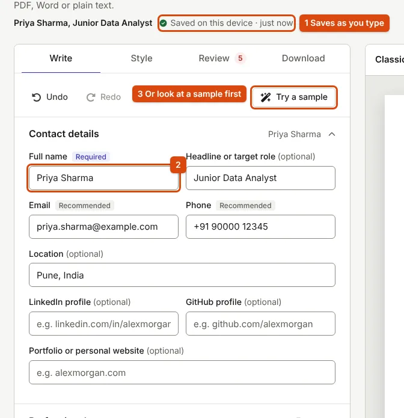
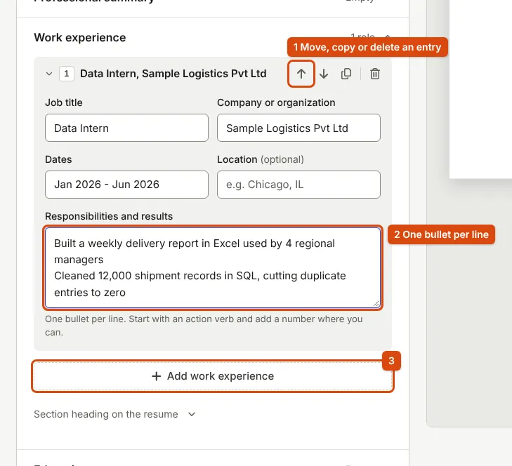
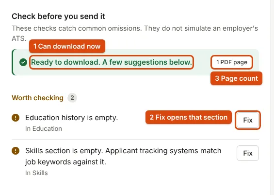
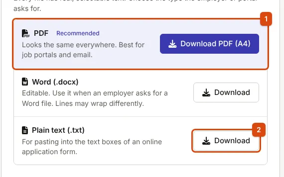

How to Create a Resume from Blank, Step by Step
Start with an empty resume, fill it section by section, pick a template, check it, and download a PDF. Each step shows what you will see on screen.
What this tutorial covers
This is a click-by-click walk through the resume builder, from an empty page to a downloaded PDF. It covers the order of the screens and what each button does. For what to write in each section, the guides on writing a summary, bullet points that show results and the skills section go deeper. The screenshots below were taken from the builder itself, filled in for an invented applicant called Priya Sharma.
Before you start
- A current browser on a phone or computer. On a phone the editor and the preview are two tabs, Edit and Preview, with a Download button beside them; everything else works the same.
- Your details at hand: email and phone number, each job or internship with its dates, each qualification with its years, and a list of your skills. A job advert you plan to apply to is useful for the review step.
- About 20 to 30 minutes for a first version. You can stop at any time: the builder saves as you type, in this browser on this device.
- On a shared or cyber cafe computer, read protecting your privacy on a shared computer first and switch saving off before you type.
Step 1: Open the builder
Open the resume builder. Under the page title you see the resume's name, Untitled resume, and the line New resume. It saves on this device as you type. The editor opens on the Write step, with Contact details already expanded. The other steps, Style, Review and Download, are tabs along the top of the editor, and the page on the right is a live preview of the finished resume.
If a resume you saved earlier opens instead, select My resumes, then New resume. The earlier one stays in the list. To see what a finished resume looks like before you write your own, select Try a sample; when you have already typed something, the sample opens as a separate resume and yours is kept.
Step 2: Fill in your contact details
Type your name in Full name. It is the only field marked Required: nothing downloads without it. Email and Phone are marked Recommended; Headline or target role, Location, LinkedIn profile, GitHub profile and Portfolio or personal website are optional, and the separators between them on the resume appear only between fields you fill in.

What you see: the line under the title changes to Saved on this device · just now, and the resume is named after what Full name and Headline or target role hold at that first save, here Priya Sharma, Junior Data Analyst. If you pause after typing your name, it is named after the name alone. You can rename it later in My resumes, as editing a saved resume shows.
Step 3: Write a short summary
Select Professional summary to open it and type two or three lines in Summary or career objective: the role you want, your strongest evidence, and what you bring. The section is optional. A fresher with little experience can lead with a qualification and a project instead. The header of each section shows Empty until you write something in it.
Step 4: Add work experience
Open Work experience and select Add work experience. A card called Role 1 appears with five fields: Job title, Company or organization, Dates, Location (optional) and Responsibilities and results. In the last one, put one bullet per line, start each with an action verb, and add a number where you can. Select Add work experience again for the next role, most recent first.

Internships, part-time and freelance work count. If you have no work history yet, use Projects instead: Add project gives a similar card for a college or personal project.
Step 5: Add education
Open Education and select Add education. Fill in Degree or field of study, School or university and Years; Location and GPA or honors are optional. Add your highest qualification first. Each card has the same move, duplicate and delete buttons as a role.
Step 6: List your skills, and add any other section
Open Skills. There are four rows, and each prints on the resume as "Label: skills". The labels come from the template; with the default template they read Core Competencies, Tools & Platforms, Technical & Data Skills and Professional Skills. Type the skills on one line, separated by commas. To use your own label, type it in the small box at the start of the row; leave a row empty and it does not print.
Below the sections, Add another section offers Certifications & Credentials, Honors & Achievements, Community & Leadership, Languages, Publications, Academic & Research (CV), References and a custom section with your own heading. Choose one and select Add.
Step 7: Choose a template in Style
Select Next: Style at the bottom of the editor, or the Style tab. The template list can be filtered with the buttons above it (All, General, Students & freshers, Tech, Senior & executive, Specialist roles). Select a template to use it; the eye button beside each one opens a full preview. Switching keeps everything you wrote.

Under Type and page you can change the font, font size, paper size (A4 or US Letter) and spacing. Under Sections you can move a section up or down, or hide it without deleting what you wrote. Keep an eye on the page count above the preview while you do this.
Step 8: Check it in Review
Select Next: Review. The panel Check before you send it lists anything missing, grouped as things to fix, things worth checking and suggestions. Each item names the section it is in, and Fix takes you to that field. The Review tab shows how many items are left.

Below the checklist, Compare with a job description takes a pasted job advert and shows which of its key terms your resume already uses. It runs on your device and the advert is not saved. Add a missing term only if it truly describes your experience; tailoring a resume to a job description explains how.
Step 9: Download
Select Next: Download. Three rows offer the same resume in three formats:
- Download PDF (A4), marked Recommended: the file for job portals and email. For our applicant it was saved as Priya_Sharma_Junior_Data_Analyst_Resume.pdf: her name, then the first part of her headline, so versions for different roles get different names.
- Word (.docx): an editable copy, for an employer who asks for Word. Lines may wrap differently in another word processor.
- Plain text (.txt): for pasting into the text boxes of an online form.

The PDF button above the preview downloads the same PDF from any step, and Print, or save as PDF with the browser opens the browser's print dialog instead.
What you get
- A PDF made of real, selectable text, named after you, in the template and paper size you chose. Open it and check every line before you send it.
- Optionally, the same content as a Word file and a plain text file.
- A saved copy in this browser, listed under My resumes, which you can reopen and change later. It stays on this device only; to keep a copy that survives clearing the browser, follow backing up and restoring resumes.
If something goes wrong
"Add your name in Contact details before downloading."
The builder took you back to the Write step because Full name is empty. Type your name and download again.
The resume runs onto a second page
The page count above the preview says so. Shorten older roles first, then try Spacing or Font size under Type and page. One page or two helps you decide whether a second page is justified.
The line under the title says "Not saved"
The words after it say why: saving is switched off, the browser is not keeping data for this site (for example in a private window), or storage failed. Download a backup file from the Download step so nothing is lost.
The print dialog opened instead of a download
Your resume contains characters that the built-in PDF fonts cannot show. The builder says Use Save as PDF in the print dialog to preserve all your characters. Choose Save as PDF as the printer.
Nothing seems to download on a phone
Look in the browser's downloads list or the phone's Downloads folder; some browsers show a small bar at the bottom of the screen instead of opening the file.
Sources
- National Careers Service (UK): How to write a CV, the usual sections and their order
- MDN Web Docs: IndexedDB API, the browser storage the builder saves resumes in
- Library of Congress: PDF (Portable Document Format) Family
Every step on this page was followed in the current resume builder, and the screenshots come from it. Found a mistake? Report an error.